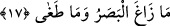

gördüğü zaman baygınlık geçirmesi gibi korkmayıp, kendisine verilen sebât kuvveti,
bedeninin takat gücü ile baygınlık geçirip yere yığılmamıştır.
Başka bir kavle göre Sidre’yi kaplayan şey, ağacın dallarına üşüşen kargalar misâli
büyük bir melek topluluğudur. Bunlar insanların Ka’be’yi ziyareti gibi oraya Allah
Teâlâ’ya ibâdet etmek veya oradan feyizlenmek için gelmişlerdir. Başka bir rivâyete
göre de orayı bürüyenler, Nebî (a.s.) ile buluşmayı murad eden ve bu hususta
Rabb’lerinden izin talep edip de istekleri kabul edilen melâike gürûhudur. Bunlara:
“Peygambere yaklaştığınız zaman muhakkak ona bir şeyler saçınız” denilmiş ve onların
her biri cennet tabağından bir tabak içerisinde hesabsız miktarda güzel şeylerle ona
gelmişler ve bununla ona yakınlaşmak için önüne dökmüşlerdir.
Bir hadis-i şerifte de: “Allah’ın Rasûlüne orada; yâni Sidrede’de üç şey
verilmiştir” buyrulmuştur.[90] (Mi’râc’ta) verilen bu üç şey: “Beş vakit namaz, bakara
sûresinin son (iki) âyeti ve ümmet-i Muhammed’den Allah’a şirk koşmadan vefat eden
herkesin bağışlanacak olmasıdır.”
et-Te’vilâtü’n-Necmiyye’de bu âyetin işârî tefsirinin şöyle olduğu zikredilir: “Bu
âyet-i kerîme; esmâ-i mezâhire, latîf olan cemâl sıfatlarına ve kaynaklarının sonsuz
olması hasebiyle hadsiz, hesapsız vasıflara sâhip Sidre-i Müntehâ adlı Vâhidiyyet
ağacını örten kahr-ı celâliyyeye işâret etmektedir. Çünkü esmâ her ne kadar külliyyâtı
yönünden sonlu ise de cüziyyâtı hasebiyle sonsuzdur. Sidre’nin ve onun direğinin
hakikati, dalları, yaprak ve çiçeklerinin kesretiyle örtülü ve kaplı idi. İşte bu tavsîf
Sidre’nin kendisinin azametine ve kadrinin yüceliğine delâlet etmektedir. Nasıl böyle
olmasın ki? Vâhidiyye hakikat hasebiyle ahadiyyetin aynısı ve aklî değerlendirme
açısından onun gayrısıdır. Gerçekten iyi idrak et ki hakikati, tarikatı ve şerîatı iyi
kavrayabilesin.
Baklî der ki: “Akıllar Sidre’yi kaplayan şeyin hakikatini ve bu olayın nasıl tahakkuk
ettiğini idrak edemeyeceği için Allah Teâlâ bunu onlardan saklamıştır. Ayrıca Allah’ın
kıdemi/ezeliyyet vasfı, O’nun mekânlardan münezzeh olduğuna delâlet eder. Oysa bu
idrâki varsayarsak, Sidre ağacının, Hakk Sübhânehû’nun en lâtif tecellîsine ayna görevi
göreceğini iddiâ etmiş oluruz. O halde bu âyetin tefsirini ancak Allah ve ilimde rüsûh
sâhibi olan kimseler bilir ve bu rüsûh sâhibi âlimler bu husustaki ilme vukûflarından
sonra “Biz O’na imân ettik” derler.”
17. Gözü kaymadı ve sınırı aşmadı.
“(Muhammed’in) gözü kaymadı,” şaşmadı. “Zeyğ”, “istikâmetten ayrılmak”tır. Yâni
“Rasûlullah (s.a.)’ın gözü en küçük bir meyille de olsa gördüğü şeyden ayrılmadı,
takdirindedir.